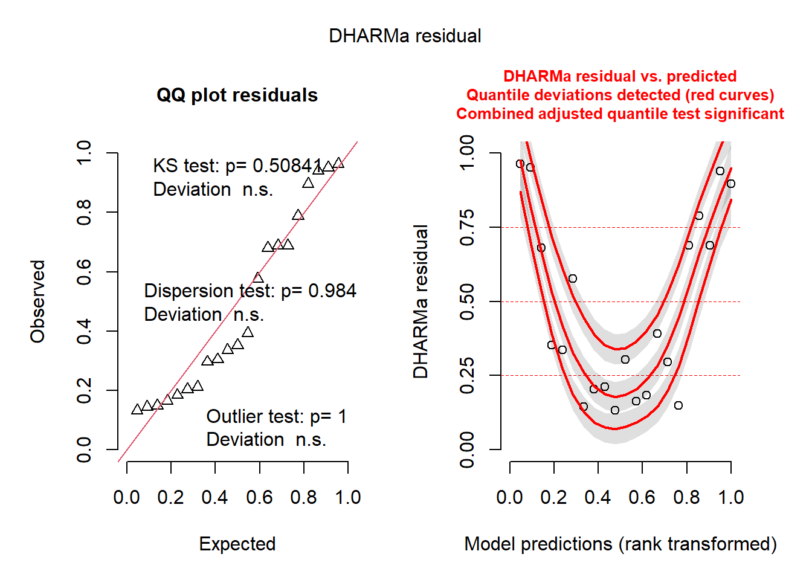

library(ggplot2)
library(dplyr)
library(gridExtra)
library(ggpubr)
library(ggfortify)
library(DHARMa)Regression
Lineare Regression
- gerichtete Abhängigkeit zwischen zwei Variablen
- \({x}\) beeinflusst \({y}\)
- \({x}\) unabhängige Variable (independent, predictor, explanatory variable)
- \({y}\) abhängige Variable (dependent, response variable)
- sowohl Abhängige als auch Erklärungsvariable sind kontinuierlich
- \({y=f(x)}\) oder
y ~ x - \({y = a + bx}\)
- Parameter \({a}\) Intercept (Achsenabschnitt)
- Parameter \({b}\) Slope (Steigung)
mod<-lm(Abhängige~Erklärungsvariable, data=md)- Differenz zwischen gemessenem \({y}\) (
observedodermeasured) und dem vom Modell vorhergesagten Wert \(\hat{y}\) (fittedoderpredicted) beim gleichen Wert \({x}\) nennt man Residuen (residuals) - Residuen haben die gleiche Einheit wie \({y}\) (parallel zur y-Achse)

Annahmen:
- die Erklärungsvariable x wurde fehlerfrei gemessen
- Varianz von y ist konstant (wird nicht größer)
- Residuen annähernd normalverteilt
mod.Bsp1=lm(yn~x)
simulationOutput <- simulateResiduals(fittedModel = mod.Bsp1, plot = F)
plot(simulationOutput)
mod.Bsp2=lm(yh~x)
simulationOutput <- simulateResiduals(fittedModel = mod.Bsp2, plot = F)
plot(simulationOutput)
Nur für das erste Beispiel treffen die Annahmen für eine Regression zu. Im zweiten Beispiel tritt der Trompeteneffekt auf (Heteroskedastizität).
Beispiel Anscombe 1973

Diese vier Datensätze ergeben vier Regressionsmodelle mit gleichem Intercept, Slope, R² und Stichprobenumfang. Doch nur für das Beispiel oben links werden die Annahmen für eine lineare Regression erfüllt. Dieses Beispiel verdeutlicht, dass wir dringend Modelldiagnostik betreiben müssen, indem wir unsere Daten und die Residuen der Modelle plotten.
Beispiel Trade-off zwischen Ertrag und Proteingehalt
Bei gleicher N-Düngung beobachtet man im Weizen aufgrund unterschiedlicher Sorteneigenschaften häufig einen Trade-off zwischen Ertrag und Proteingehalt.
Frage: Wie stark reduziert sich der Proteingehalt mit steigendem Ertrag?
Vorgehensweise:
Daten einlesen, kennenlernen und plotten
library(openxlsx)
reg<-read.xlsx("Trade-off.xlsx")
str(reg)'data.frame': 10 obs. of 2 variables:
$ Ert : num 90.5 101.3 93.3 102 72 ...
$ Prot: num 10.9 12.5 12.3 11.6 13.3 ...summary(reg) Ert Prot
Min. : 51.65 Min. :10.51
1st Qu.: 72.88 1st Qu.:11.73
Median : 90.70 Median :12.89
Mean : 84.93 Mean :13.12
3rd Qu.: 99.30 3rd Qu.:14.07
Max. :109.28 Max. :16.80 ggplot(reg, aes(x=Ert, y=Prot)) +
geom_point()Modell formulieren
mod<-lm(Prot~Ert, data=reg)
summary(mod)
Call:
lm(formula = Prot ~ Ert, data = reg)
Residuals:
Min 1Q Median 3Q Max
-1.64733 -0.49234 0.00472 0.60021 1.54734
Coefficients:
Estimate Std. Error t value Pr(>|t|)
(Intercept) 21.26794 1.55972 13.636 8.05e-07 ***
Ert -0.09590 0.01798 -5.335 0.000699 ***
---
Signif. codes: 0 '***' 0.001 '**' 0.01 '*' 0.05 '.' 0.1 ' ' 1
Residual standard error: 1.008 on 8 degrees of freedom
Multiple R-squared: 0.7806, Adjusted R-squared: 0.7531
F-statistic: 28.46 on 1 and 8 DF, p-value: 0.0006987Mit jedem Anstieg des Ertrag (je dt/ha) sinkt der Proteingehalt um -0.1 %. Das R² des Modells beträgt 78.1.
Signifikanztest der Modellparameter
drop1(mod, test="F")Single term deletions
Model:
Prot ~ Ert
Df Sum of Sq RSS AIC F value Pr(>F)
<none> 8.128 1.9277
Ert 1 28.914 37.043 15.0948 28.458 0.0006987 ***
---
Signif. codes: 0 '***' 0.001 '**' 0.01 '*' 0.05 '.' 0.1 ' ' 1Signifikanter Zusammenhang zwischen Ertrag und Proteingehalt.
Modelldiagnostik
library(DHARMa)
simulationOutput <- simulateResiduals(fittedModel = mod, plot = F)
plot(simulationOutput)
Auch wenn es bei diesem kleinen Stichprobenumfang schwierig ist, diese Plots sicher zu interpretieren, scheint alles in Ordnung zu sein.
- Die Residuen sind annähernd normalverteilt (Plot oben links).
- Die Residuen weisen keinen Trompeteneffekt (Varianzheterogenität) auf (Plot oben rechts).
- Es gibt keine erkennbare Muster in den Residuen.
- Es gibt keine einflussreiche Punkte (keine roten Sternchen im Plot oben rechts).
plotResiduals(simulationOutput, form = reg$Ert)
Auch der Plot gegen die Erklärungsvariable zeigt keine auffälligen Muster.
Das Paket ggfortify gibt noch zwei weitere Plots zur Cook’s Distance und Leverage aus. Hat eine Stichprobe eine hohe Leverage (i.e. Hebelwirkung, extremer Wert in x) und gleichzeitig ein großes Residuum (große Differenz zwischen beobachtetem und erwartetem Wert), dann spricht man von einem einflussreichem Punkt, der evtl. ein Ausreißer ist und durch eine hohe Cook’s Distance (> 1 oder 0,5) gekennzeichnet ist.
Entsprechend kann man auf diese Werte nochmal genauer schauen (i.e. den Wert auf Eingabefehler überprüfen) und ggfls. das Modell ohne Ausreißer rechnen und die “neuen” Modellparameter mit den “alten” vergleichen und damit die Robustheit der Ergebnisse überprüfen.
library(ggfortify)
autoplot(mod, which =c(4,6), ncol = 2, label.size = 3)
Modellinterpretation
Die predict-Funktion rechnet uns die Erwartungswerte basierend auf den Modellkoeffizienten aus. Gibt man kein weiteres Argument in die predict-Funktion, dann werden die Originaldaten zur Vorhersage genutzt.
predict(mod) 1 2 3 4 5 6 7 8
12.59231 11.55265 12.32326 11.48316 14.36743 16.31497 15.24944 14.01335
9 10
12.54665 10.78760 reg$Ert [1] 90.46327 101.30412 93.26876 102.02872 71.95367 51.64602 62.75668
[8] 75.64570 90.93937 109.28159Bei einem Ertrag von 90.4 dt/ha schätzt unser Modell einen Proteingehalt von 12.59 %, bei einem Ertrag von 101.3 dt/ha schätzt es einen Proteingehalt von 11.6 %.
Wir können uns nun fragen, wie hoch der Proteingehalt bei einem Ertrag von 80 dt/ha ist. Hierzu müssen wir die geschätzten Koeffizienten (rcoef(mod)) in die Modellgleichung (y = a + b*x) einsetzen, wobei a der Intercept, b der Koeffizient fürErt` und x der Ertrag ist:
predict(mod, newdata=data.frame(Ert=80)) 1
13.59576 Jetzt fehlt nur noch eine Abbildung zum Zusammenhang zwischen Wachstum und Ertrag.
Ganz schnell und einfach geht es mit dem Package effects.
library(effects)
plot(allEffects(mod))plot(Effect(c("Ert"), mod, partial.residuals=TRUE))
Die blaue Linie zeigt uns den fit (also die Regressionslinie) an, während die orangefarbene Linie ist ein fit durch die Residuen und sollte entlang der blauen Linie laufen und keine Kurvatur aufweisen.
Eine weitere Alternative für die Abbildung der Originalwerte zusammen mit den Vorhersagewerten und Konfidenzintervalle des Modells bietet die library(effects).
ef=allEffects(mod, xlevels=100)
ef1=as.data.frame(ef[[1]])
head(ef1) Ert fit se lower upper
1 51.65 16.31459 0.6778851 14.75139 17.87780
2 52.23 16.25897 0.6687008 14.71694 17.80100
3 52.81 16.20335 0.6595535 14.68241 17.72428
4 53.39 16.14772 0.6504446 14.64779 17.64765
5 53.97 16.09210 0.6413759 14.61308 17.57111
6 54.56 16.03552 0.6321938 14.57767 17.49336tail(ef1) Ert fit se lower upper
95 106.4 11.06395 0.5005978 9.909565 12.21833
96 107.0 11.00640 0.5089613 9.832737 12.18007
97 107.5 10.95845 0.5159996 9.768556 12.14835
98 108.1 10.90091 0.5245242 9.691357 12.11047
99 108.7 10.84337 0.5331307 9.613969 12.07277
100 109.3 10.78583 0.5418153 9.536401 12.03526Durch das Argument xlevels=100 werden 100 Einträge für die Erklärungsvariablen im beobachteten Werteberich erzeugt. Die Spalte fit zeigt die fitted values (Vorhersagewerte) und in lower und upper sind die Grenzen des Konfidenzintervalls aufgeführt.
Nun plotten wir die Originalwerte und zeichnen dann die Daten aus ef1 mit den Funktionen geom_line() und geom_ribbon() ein.
ggplot(reg, aes(x=Ert, y=Prot)) +
geom_point()+
geom_line(data = ef1, aes(x = Ert, y = fit))+
geom_ribbon(data = ef1, aes(x = Ert, y = NULL, ymin =lower, ymax = upper), alpha = 0.4)Bei einer einfachen Regression kann man die Regressionslinie mit der Funktion geom_smooth(method=lm) einzeichnen.
ggplot(reg, aes(x=Ert, y=Prot)) +
geom_point()+
geom_smooth(method=lm)`geom_smooth()` using formula = 'y ~ x'
oder geom_abline(intercept = 21.26794, slope = -0.09590221)
ggplot(reg, aes(x=Ert, y=Prot)) +
geom_point()+
geom_abline(intercept= 21.26794, slope=-0.09590221)
# oder so
ggplot(reg, aes(x=Ert, y=Prot)) +
geom_point()+
geom_abline(intercept=coef(mod)[1], slope=coef(mod)[2])
Alternativ, aber etwas komplizierter, geht es auch so:
Um die Regressionslinie des Modells in einen Plot “per Hand” einzuzeichnen, erstellen wir einen Testdatensatz, der alle Erklärungsvariablen des Modells in einem realistischen Wertebereich (Minimum bis Maximum) enthält. In diesem Beispiel ist das sehr einfach, da Ert die einzige Erklärungsvariable ist.
Wir benennen den Testdatensatz td und nutzen die predict-Funktion mit dem Argument newdata=td um die Erwartungswerte td$p zu berechnen.
range(reg$Ert)[1] 51.64602 109.28159#Testdatensatz mit Erklärungsvariablen (Wertebereich und Variablenname) erstellen
td<-data.frame(Ert=seq(from = 50, to =110, by = 5))
td Ert
1 50
2 55
3 60
4 65
5 70
6 75
7 80
8 85
9 90
10 95
11 100
12 105
13 110#Predict-Funktion für neu erstellten Datensatz nutzen
td$p<-predict(mod, newdata=td)
td Ert p
1 50 16.47283
2 55 15.99332
3 60 15.51381
4 65 15.03430
5 70 14.55479
6 75 14.07528
7 80 13.59576
8 85 13.11625
9 90 12.63674
10 95 12.15723
11 100 11.67772
12 105 11.19821
13 110 10.71870td<-data.frame(td, predict(mod, newdata=td, interval = "confidence"))
td Ert p fit lwr upr
1 50 16.47283 16.47283 14.848937 18.09672
2 55 15.99332 15.99332 14.551201 17.43544
3 60 15.51381 15.51381 14.245615 16.78200
4 65 15.03430 15.03430 13.928471 16.14012
5 70 14.55479 14.55479 13.593891 15.51568
6 75 14.07528 14.07528 13.232828 14.91772
7 80 13.59576 13.59576 12.832845 14.35868
8 85 13.11625 13.11625 12.381199 13.85131
9 90 12.63674 12.63674 11.872220 13.40126
10 95 12.15723 12.15723 11.311883 13.00258
11 100 11.67772 11.67772 10.713011 12.64243
12 105 11.19821 11.19821 10.087965 12.30845
13 110 10.71870 10.71870 9.445689 11.99171str(td)'data.frame': 13 obs. of 5 variables:
$ Ert: num 50 55 60 65 70 75 80 85 90 95 ...
$ p : num 16.5 16 15.5 15 14.6 ...
$ fit: num 16.5 16 15.5 15 14.6 ...
$ lwr: num 14.8 14.6 14.2 13.9 13.6 ...
$ upr: num 18.1 17.4 16.8 16.1 15.5 ...Jetzt plotten wir die Originaldaten und zeichnen
- die Regressionslinie durch die
geom_line()-Funktion der vorhergesagten Wertetd$fitund - das Konfidenzintervall durch die
geom_ribbon-Funktion der vorhergesagten Wertetd$lwrundtd$uprein.
ggplot(reg, aes(x=Ert, y=Prot)) +
geom_point()+
geom_line(data = td, aes(x = Ert, y = fit))+
geom_ribbon(data = td, aes(x = Ert, y = NULL, ymin = lwr, ymax = upr), alpha = 0.4)Polynomiale Regression: Quadratischer Term
Mit einer linearen Regression können auch “nicht-lineare” Zusammenhänge modelliert werden.

Wenn die Daten einen nicht-linearen Trend aufweisen, wir aber nur einen linearen Term modellieren, zeigen die Residuen ein Muster, i.e. eine Kurvatur.
set.seed(123)
df=data.frame(y3=y3+runif(length(y3),0,4), x)
mod=lm(y3~x, df)
ggplot(data=df, aes(y=y3, x=x))+
geom_point()+geom_smooth(method = lm)`geom_smooth()` using formula = 'y ~ x'simulationOutput <- simulateResiduals(fittedModel = mod, plot = F)
plot(simulationOutput)
Wir können diesen Zusammenhang modellieren, indem wir einen quadratischen Term in das lineare Modell nehmen.
mod<-lm(Abhängige~poly(Erklärungsvariable, 2), data=md)
oder
mod<-lm(Abhängige~Erklärungsvariable+I(Erklärungsvariable^2), data=md)
Das I (Großbuchstabe i) steht für “as is”.
mod2=lm(y3~x+I(x^2), df)
ggplot(data=df, aes(y=y3, x=x))+
geom_point()+
geom_smooth(method = lm, formula=y ~ poly(x, 2))
simulationOutput <- simulateResiduals(fittedModel = mod2, plot = F)
plot(simulationOutput)
plotResiduals(simulationOutput, form = df$x)
Übung 5
- Importiere die Daten NDuenger.xlsx und mach dich mit den Daten vertraut.
Tip
library(openxlsx)
dat=read.xlsx("NDuenger.xlsx")
str(dat)'data.frame': 20 obs. of 2 variables:
$ ERT: num 70 73.1 75.5 79.8 81.1 79.7 84.5 82.9 83.6 86.4 ...
$ ND : num 100 103 107 108 108 ...library(ggplot2)
ggplot(dat, aes(x=ND, y=ERT)) +
geom_point()- Führe eine Regression durch, um den Einfluss der N-Düngung auf den Ertrag zu modellieren. Was ist die Abhängige (y), was die Erklärungsvariable (x)?
Tip
mod<-lm(ERT~ND, data=dat)
drop1(mod, test="F")Single term deletions
Model:
ERT ~ ND
Df Sum of Sq RSS AIC F value Pr(>F)
<none> 66.94 28.162
ND 1 911.81 978.75 79.811 245.17 6.271e-12 ***
---
Signif. codes: 0 '***' 0.001 '**' 0.01 '*' 0.05 '.' 0.1 ' ' 1summary(mod)
Call:
lm(formula = ERT ~ ND, data = dat)
Residuals:
Min 1Q Median 3Q Max
-3.6108 -1.2027 -0.0947 1.6025 2.8800
Coefficients:
Estimate Std. Error t value Pr(>|t|)
(Intercept) 12.66007 4.64358 2.726 0.0139 *
ND 0.60648 0.03873 15.658 6.27e-12 ***
---
Signif. codes: 0 '***' 0.001 '**' 0.01 '*' 0.05 '.' 0.1 ' ' 1
Residual standard error: 1.928 on 18 degrees of freedom
Multiple R-squared: 0.9316, Adjusted R-squared: 0.9278
F-statistic: 245.2 on 1 and 18 DF, p-value: 6.271e-12- Stimmen die Annahmen für eine lineare Regression?
Tip
library(DHARMa)
simulationOutput <- simulateResiduals(fittedModel = mod, plot = F)
plot(simulationOutput)Warning in newton(lsp = lsp, X = G$X, y = G$y, Eb = G$Eb, UrS = G$UrS, L = G$L,
: Anpassung beendet mit Schrittweitenfehler - Ergebnisse sorgfältig prüfenplotResiduals(simulationOutput, form=dat$ND)Warning in newton(lsp = lsp, X = G$X, y = G$y, Eb = G$Eb, UrS = G$UrS, L = G$L,
: Anpassung beendet mit Schrittweitenfehler - Ergebnisse sorgfältig prüfenNein, eine deutliche Kurve in dem Residuen vs. fitted values Plot.
Ich fitte nun ein polynomiales Modell mit quadratischem Term. Man könnte auch die Abhängige und/oder die Erklärungsvariablen transformieren (z.B. Wurzel oder log) und dann Modelle fitten und die Residuen überprüfen. Ich denke aber, dass ein polynomiales Modell den Zusammenhang ganz gut widerspigeln könnte.
mod2<-lm(ERT~ND+I(ND^2), data=dat)simulationOutput <- simulateResiduals(fittedModel = mod2, plot = F)
plot(simulationOutput)plotResiduals(simulationOutput, form=dat$ND)Besser. Die Residuen weisen kein auffälliges Muster auf.
drop1(mod2, test="F")Single term deletions
Model:
ERT ~ ND + I(ND^2)
Df Sum of Sq RSS AIC F value Pr(>F)
<none> 42.324 20.992
ND 1 41.552 83.876 32.672 16.6897 0.0007708 ***
I(ND^2) 1 24.619 66.943 28.162 9.8884 0.0059113 **
---
Signif. codes: 0 '***' 0.001 '**' 0.01 '*' 0.05 '.' 0.1 ' ' 1Beide Terme sind signifikannt.
summary(mod2)
Call:
lm(formula = ERT ~ ND + I(ND^2), data = dat)
Residuals:
Min 1Q Median 3Q Max
-2.4642 -1.2745 0.1751 1.0468 3.1174
Coefficients:
Estimate Std. Error t value Pr(>|t|)
(Intercept) -1.078e+02 3.849e+01 -2.800 0.012297 *
ND 2.623e+00 6.421e-01 4.085 0.000771 ***
I(ND^2) -8.368e-03 2.661e-03 -3.145 0.005911 **
---
Signif. codes: 0 '***' 0.001 '**' 0.01 '*' 0.05 '.' 0.1 ' ' 1
Residual standard error: 1.578 on 17 degrees of freedom
Multiple R-squared: 0.9568, Adjusted R-squared: 0.9517
F-statistic: 188.1 on 2 and 17 DF, p-value: 2.543e-12Das Modell hat ein R² von 95,7%.
Wir können auch beide Modelle mit der anova()-Funktion (F-test) vergleichen und sehne hier, dass mod2 signifikant besser fitted.
anova(mod, mod2)Analysis of Variance Table
Model 1: ERT ~ ND
Model 2: ERT ~ ND + I(ND^2)
Res.Df RSS Df Sum of Sq F Pr(>F)
1 18 66.943
2 17 42.324 1 24.619 9.8884 0.005911 **
---
Signif. codes: 0 '***' 0.001 '**' 0.01 '*' 0.05 '.' 0.1 ' ' 1Auch ein Vergleich der AIC-Werte zeigt, dass mod2 einen niedrigeren AIC im Vergleich zu mod hat und entsprechend damit einen besseren fit aufweist. Mehr Informationen zum AIC und Modellvergleich findest du im Kapitel Statistische Modellierung.
AIC(mod, mod2) df AIC
mod 3 86.91963
mod2 4 79.74999- Wie hoch ist laut Modell der zu erwartende Ertrag bei 120 kg N?
Tip
Um diese Frage zu beantworten, sollten wir das polynomiale Modell nutzen. Wir können entweder die 120 kg N in die Modellgleichung einsetzten
coef(mod2) (Intercept) ND I(ND^2)
-1.077851e+02 2.623078e+00 -8.368154e-03 coef(mod2)[1]+120*coef(mod2)[2]+120^2*coef(mod2)[3](Intercept)
86.48283 oder die Funktion predict()nutzen:
predict(mod2, newdata=data.frame(ND=120)) 1
86.48283 Wir sollten nicht das lineare Modell interpretieren, da dies keinen guten fit aufweist (trotz hohem R²).
predict(mod, newdata=data.frame(ND=120)) 1
85.43708 - Plotte die Regressionslinie des Modells/der Modelle.
Tip
schnelle Interpretation:
library(effects)
plot(allEffects(mod2)) plot(Effect(c("ND"), mod2, partial.residuals=TRUE))das “falsche Model”
plot(allEffects(mod)) plot(Effect(c("ND"), mod, partial.residuals=TRUE)) 
Im Plot sehen wir nocheinmal, dass das euinfache lineare Modell (mod) im niedrigen und hohen N-Düngerbereich den Ertrag überschätzt.
Zu Interpretation dieses einfachen Modell (ohne weitere Kovariablen) könnten wir auch geom_smooth() nutzen, um die Regressionsline einzuzeichnen.
ggplot(dat, aes(x=ND, y=ERT)) +
geom_point()+
geom_smooth(method=lm, formula=y ~ poly(x, 2), col="green") # quadrnur zum Vergleich beider Modelle:
ggplot(dat, aes(x=ND, y=ERT)) +
geom_point()+
geom_smooth(method=lm)+#linear
geom_smooth(method=lm, formula=y ~ poly(x, 2), col="green") # quadr`geom_smooth()` using formula = 'y ~ x'hier aber noch der Code, bei dem das Modell interpretiert wird, wenn auch andere Effekte im Modell wären:
ef=allEffects(mod2, xlevels=100)
ef1=as.data.frame(ef[[1]])
head(ef1) ND fit se lower upper
1 100.5 71.31378 1.0078085 69.18749 73.44007
2 100.9 71.68888 0.9699969 69.64236 73.73539
3 101.3 72.06129 0.9333186 70.09216 74.03042
4 101.7 72.43103 0.8977950 70.53685 74.32521
5 102.2 72.88943 0.8550494 71.08544 74.69343
6 102.6 73.25315 0.8222100 71.51843 74.98786tail(ef1) ND fit se lower upper
95 139.3 95.22989 0.9450695 93.23596 97.22381
96 139.7 95.34523 0.9798871 93.27785 97.41261
97 140.2 95.48565 1.0250315 93.32302 97.64827
98 140.6 95.59497 1.0624230 93.35345 97.83648
99 141.0 95.70161 1.1009301 93.37885 98.02437
100 141.4 95.80557 1.1405367 93.39925 98.21190ggplot(dat, aes(x=ND, y=ERT)) +
geom_point()+
geom_line(data = ef1, aes(x = ND, y = fit))+
geom_ribbon(data = ef1, aes(x = ND, y = NULL, ymin =lower, ymax = upper), alpha = 0.4) oder so:
td<-data.frame(ND=seq(100,142, 1))
td<-data.frame(td, predict(mod, newdata=td, interval="confidence"))
td<-data.frame(td, predict(mod2, newdata=td, interval="confidence"))
td[1:10,] ND fit lwr upr fit.1 lwr.1 upr.1
1 100 73.30758 71.48955 75.12561 70.84115 68.61184 73.07046
2 101 73.91405 72.16610 75.66200 71.78223 69.75529 73.80917
3 102 74.52053 72.84164 76.19942 72.70657 70.86698 74.54617
4 103 75.12700 73.51603 76.73798 73.61418 71.94615 75.28221
5 104 75.73348 74.18911 77.27785 74.50505 72.99194 76.01816
6 105 76.33995 74.86072 77.81919 75.37918 74.00340 76.75496
7 106 76.94643 75.53064 78.36222 76.23658 74.97958 77.49358
8 107 77.55290 76.19865 78.90716 77.07724 75.91965 78.23483
9 108 78.15938 76.86446 79.45429 77.90117 76.82318 78.97915
10 109 78.76585 77.52777 80.00394 78.70835 77.69035 79.72636ggplot(dat, aes(x=ND, y=ERT)) +
geom_point()+
geom_line(data = td, aes(x = ND, y = fit.1))+
geom_ribbon(data = td, aes(x = ND, y = NULL, ymin = lwr.1,
ymax = upr.1), alpha = 0.4)ggplot(dat, aes(x=ND, y=ERT)) +
geom_point()+
geom_line(data = td, aes(x = ND, y = fit.1), size=1)+
geom_ribbon(data = td, aes(x = ND, y = NULL, ymin = lwr.1,
ymax = upr.1), alpha = 0.2)+
geom_line(data = td, aes(x = ND, y = fit), col=2, size=1)+
geom_ribbon(data = td, aes(x = ND, y = NULL, ymin = lwr,
ymax = upr, linetype=NA), col=2, alpha = 0.2)+
theme(legend.position = "none")Extraaufgabe:
- Extrapoliere die Vorhersage des Modells für eine N-Düngung von 250 kg.
Tip
td1<-data.frame(ND=seq(100,250, 1))
td1$p<-predict(mod, newdata=td1)
td1$p2<-predict(mod2, newdata=td1)ggplot(dat, aes(x=ND, y=ERT)) +
geom_point()+
geom_line(data = td1, aes(x = ND, y = p))+
geom_line(data = td1, aes(x = ND, y = p2))Wir sollten das Modell immer nur für den beobachteten Wertebereich interpretieren und insbesondere bei polynomialen Modellen nicht extrapolieren.
Ende Übung 5